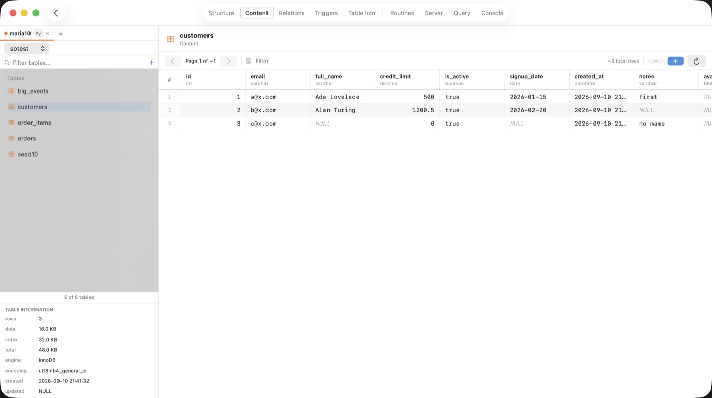

Query every database as if it were one.
SequelBridge is a native macOS client that runs a single SQL query — JOINs included — across MySQL, PostgreSQL, SQLite, and ClickHouse at the same time.
SELECT o.id, c.full_name, r.region, o.total FROM mysql.shop.orders AS o JOIN postgres.public.customers AS c ON c.id = o.customer_id JOIN sqlite.regions AS r ON r.code = c.region WHERE o.total > 1000;
| id | full_name | region | total |
|---|---|---|---|
| 4471 | Ada Lovelace | EU-West | 1,240.00 |
| 4472 | Alan Turing | UK | 3,015.50 |
| 4488 | Grace Hopper | US-East | 1,899.99 |
No ETL. No staging tables. No exporting CSVs between systems.
Connect your servers once and treat them as a single database. Under the hood an embedded DuckDB engine plans your query and pushes work down to each source over its native protocol.
Cross-engine JOINs
Join a MySQL table to a Postgres table to a local SQLite lookup in one statement — the headline feature, and it just works.
Fast results grid
Sortable columns, tabular numbers, inline cell viewing, and one-click export to CSV or JSON. Big results stay responsive.
Full table browser
Structure, content, relations and triggers for every table, with keys and indexes laid out clearly.
Query editor
Saved queries, history, syntax highlighting, and server-native EXPLAIN so you can see the plan.
Server tools
Browse stored routines, watch the live process list, kill runaway queries, and read config variables and status.
Console & CSV import
Every query you run is logged, copyable, and exportable. Load a CSV straight into a table when you need to.
Your data, shown at Mac quality.

The content grid, with column types, keys, and per-table information alongside.
MIT licensed. Yours to read, run, and change.
SequelBridge is free for everyone, with the full source on GitHub. It's built on DuckDB and its MySQL, PostgreSQL and SQLite scanner extensions. Issues and pull requests welcome.
Bridge your databases.
Download SequelBridge, connect your servers, and write the query that used to be impossible.